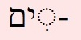
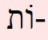
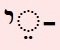

Before we start
How is this course different from all other courses?
Traditional methods seem to have as their aim to be able to translate a random bit of the text without knwoing its reference - while this would be a cool party trick it's not really something that you need to be able to do (unless you want to become aHbrew scholar?)
different varieties of Hebrew, even in tanakh (but note that in prayerbook hebrew that is not direct quotes from Tanakh not necessarily exactly the same hebrew and some aramaic)
What will I learn in these lessons? Are these lessons for me?
As the title says, these lessons are about getting started in understanding the Hebrew in the Tanakh. aim of the lessons - using the translation, figure out which word is which in the Hebrew, ie to understand how each word in the Hebrew contributes to the meaning of the verse
How will I learn it (what is the method of these lessons?)
learn most frequently occurring words in Tanakh, Biblical Hebrew basic grammar (how bh works) 50 most frequently occurring words account for >50% of Tanakh- if you learn some of the extra vocab words will know more than 50 + some more frequently occurring "little" words aim to recognize words you know -this is not always obvious as they may be disguised with prefixes and suffixes and changes of vowel
Start by picking out one or two words in a verse, gradually able to recognize more, and to deduce others that you don't know
need to be comfortable at first with not understanding every word
verbs by process of elimination
12 ? most frequently occurring nouns, 5 most frequently occurring verbs, and the most frequently occurring "little" words - prepositions and others. Plus extra vocab the next 25 most frequently occurring nouns and the next 15? most frequently occurring verbs and some more numbers and adjectives. By learning these "little" words should be abel to figure out which words are nouns and which verbs by process of elimination.
because the most frequent words occur very frequently means that you will quite soon have "friends" in the text, it will not seem so daunting
also some less frequently occurring "little" (words (words which are not nouns or verbs) so that you can more easily pick out unknown nouns and verbs
examples and frequencies taken from sections of the Tanakh I think most likely to be read by Jewixh people - Torah, Jonah, Psalms, Proverbs, Job, Song of Songs, Ruth, Lamentations, Ecclesiastes, Esther + haftarah readings from Prophets
advantages of this approach. more enjoyable, more likely to engage with the text when you don't have to keep looking up words in a dictionary (very souldestroying). more likely to become familiar with the text and hence eventually be able to recognize passages even though don't know all the words (this is the traditional method of learning - large amounts of text learned by heart)
What grammar do I need to know?
Grammatical terms kept to a minimum. Noun, verb, preposition, adjective
About translations and resources for self-study
If buying or borrowing texts with both Hebrew and English need to have side-by-side, not interspersed, show example

KJV When the King James Bible was translated and first published in 1611, no Jews lived in England – at least officially. So, we know that no Jews served as Tanach translators. Jews were readmitted to England in 1655. In 1917, the Jewish Publication Society brought out a Bible English- language translation that became the most popular in the English-speaking world. The JPS literary form consciously was based on the KJV. “Translators didn’t live in some vacuum. There are always contexts and issues of identity to deal with. Somebody who studies these translations must know the culture in which the translations worked. You must always ask: What are the translators bringing in from the culture around them?” A decisive break with the KJV didn’t come until the JPS Tanach, completed in 1962. The JPS Tanach is radically different. Rather than following a literal (or formal) approach to the text, like KJV and the 1917 translation, the new JPS Tanach was a functional equivalent. A formal translation is one in which the English follows the form of the Hebrew. The form is intrinsic to its meaning. A functional equivalent consciously shapes the text so that it sounds like a piece of modern literature. So, there’s a lot of subordination rather than coordination. Metaphors, for example, are put into terms that we would understand. A translator might ask: What did this expression mean in biblical times? How would we express this today? Consequently the text winds up sounding more modern because it is brought close to the reader. It’s not literally what the Hebrew says. Greenspoon says it’s hard to imagine somebody who is not a fan of the KJV in some ways. “One should ask: What is the purpose of the translation? Is it something designed to read out loud in a service? Or silently in a private reading? You also want to know how your translation handles the traditional Jewish interpretation of the passage.
small Tanakh vocab, same word often translated many different ways
Examples of different translations
Proverbs 3:18 KJV has italics she is a tree of life to them that lay hold upon her JPSshe is a tree of life to those who grasp her
Names of translations used as examples in the lessons JPS Jewish Publication Society KJV King James Version FOX Everett Fox PLAUT ALTER Robert Alter
| KJV | King James Version |
| JPS 1917 | THE HOLY SCRIPTURES, Tanakh 1917 edition,The Jewish Publication Society |
| JPS 2023 | THE JPS TANAKH: Gender-Sensitive Edition, The Jewish Publication Society, 2023 |
| Plaut 2015 | The Torah: A Modern Commentary, revised edition 2015, eds Gunther Plaut, David Stein. Reform Judaism Publishing. |
| Fox | The Five Books of Moses. 1997 Everett Fox. Random House |
| Alter | The Five Books of Moses: A translation with commentary. 2004. Robert Alter. W W Norton & Co |
Genesis 37:25
KJV, JPS 1917: "And they sat down to eat bread: and they lifted uo their eyes and looked and behold, a caravan of Ishmeelites came from Gilead..."
JPS 2017: "Then they sat down to a meal. Looking up, they saw a caravan of Ishmaelites coming from Gilead..."
Alter: "And they sat down to eat bread, and they raised their eyes and saw, and look, a caravan of Ishmaelites was coming from Gilead..."
Plaut: "They had sat down to eat, when they looked up and saw a caravan of Ishmaelites traveling from Gilead..."
Fox: "And they sat down to eat bread. They lifted up their eyes and saw: there was a caravan of Yishmalites coming from Gil'ad..."
And they sat down
to eat bread
and they raised
their eyes
and they saw
and behold
a caravan of
Ishmaelites
(it) came
from Gilead
Exodus 20:2
KJV: I am the Lord thy God. which have brought thee out of the land of Egypt, out of the house of bondage"
JPS 1917: "I am the LORD thy God, who brought thee out of the land of Egypt, out of the house of bondage."
JPS 2017: "I the ETERNAL am your God who brought you out of the land of Egypt, the house of bondage:"
Alter: "I am the LORD your God Who brought you out of the land of Egypt, out of the house of slaves."
Plaut: "I the Eternal am your God, who brought you out of the land of Egypt, the house of bondage.
Fox: "I am YHWH your God, who brought you out from the land of Egypt, from a house of serfs."
I
God
your God
who
brought you
from the land of
Egypt
from house of
slaves
Limited vocabulary in Tanakh compared to English
Good - less vocab to learn, AND learning the most frequent means yourecognize a large percentage of text
Bad, the most frequent words often have multiple translations, so need to be a detective
same hebrew word often translated differently according to context. Often this is because of the small vocab in the Tanakh
| Exodus 4:4 | And God said to Moses | וַיֹּ֤אמֶר יְהוָה֙ אֶל־מֹשֶׁ֔ה | tanakh/ex-04-04aa |
| Genesis 3:11 | Then he asked “Who told you that you were naked?” | וַיֹּ֕אמֶר מִ֚י הִגִּ֣יד לְךָ֔ כִּ֥י עֵירֹ֖ם אָ֑תָּה | tanakh/gen-03-11a-db |
| Exodus 6:30 | Moses appealed to God saying | וַיֹּ֥אמֶר מֹשֶׁ֖ה לִפְנֵ֣י יְהוָ֑ה | tanakh/ex-06-30a |
| Exodus 7:1 | God replied to Moses | וַיֹּ֤אמֶר יְהוָה֙ אֶל־מֹשֶׁ֔ה | tanakh/ex-07-01aa-db |
| Exodus 3:7 | And God continued"I have marked well the plight of my people in Egypt" | וַיֹּ֥אמֶר יְהוָ֔ה רָאֹ֥ה רָאִ֛יתִי אֶת־עֳנִ֥י עַמִּ֖י אֲשֶׁ֣ר בְּמִצְרָ֑יִם | tanakh/ex-03-07a |
Because the Tanakh uses a very small number of words
Good news is that the most frequent account for a large proportion of the text, so that by learning to recognize the most frequent will be able torecognize one or more words in mearly every verse
Getting the most out of the lessons
Should do all the exercises. Exercises give the translation and ask you to find specific words from the translation in the Hebrew. To get the most out of the material you should listen to all the Hebrew until you can read each passage aloud at approximately the same speed as the recording, and you can distinguish the Hebrew word(s) in the recording. Some sections have "more detail". These are not essential, suggest at first leave them out, come back to them later.
some extra bits "from the liturgy"
Lessons
| Material probably not needed any more | |||
To start with ...In these lessons, our starting point will be the English translation of the Tanakh. We will decipher the Biblical text by working out which Hebrew words correspond to the English words in the translation. In the first lesson we start by learning to recognize names - of God, people and places. Hebrew differs in several important ways from English, in particular:
The next 3 lessons give an overview of these differences (they are discussed in more detail in following lessons)
|
|||
| Words for God, names of people and places
יְהוָה
אֱלֹהִיםwords/w018_elohim
אֲדוֹנָיwords/w062_adonai
אֵלwords/w188_el
יָהּalefbet/yah
|
|||
| Prefixes overview: וּמֹשֶׁה
"and Moses"
כָּל-words/w010_kol
|
|||
| Suffixes overview: בְּנwords/w013_bnoוֹ
"his son"
-וֹ
-יו
|
|||
| Verbs overview
וַיֹּאמֶרwords/w011_vayomer
"he said"
וַיֹּאמֶרwords/w011_vayomer
וַתֹּאמֶרwords/w011_vatomer
וַי-
אֶל- words/w008_el
|
|||
NounsAbout nouns |
|||
| Singular, plural, "of" , "the", "a"/"an","and", "his" suffixes



or
-וֹ or
-יו
son
בֵּןwords/w013_ben
בֶּןwords/w013_ben
בָּנִיםwords/w013_banim
בְּנֵיwords/w013_bnei
בְּנוֹwords/w013_bno
בָּנָיוwords/w013_banav
daughter
בַּתwords/w082_bat
בָּנוֺתwords/w082_banot
בְּנוֺתwords/w082_bnot
בִּתּוֺwords/w082_bito
בְּנֹתָיוwords/w082_bnotav
|
|||
| Preposition prefixes:
מִןwords/w006_min
כָּל-words/w010_kol
|
|||
| בֵּןwords/w013_ben is the most frequently occurring noun. The next most frequently occurring nouns are: | |||
|
king, ruler
מֶלֶךְ words/w020_melech
מְלָכִיםwords/w020_mlachim
מַלְכֵיwords/w020_malchei
מַלְכּוֺwords/w020_malcho
earth, land
אֶרֶץwords/w021_eretz
הָאָרֶץwords/w021_haaretz
אֲרָצוֹתwords/w021_arazot
אַרְצוֺת words/w021_arzot
אַרְצוֺ words/w021_arzo
day
יוֹםwords/w022_yom
יָמִיםwords/w022_yamim
יְמֵיwords/w022_ymei
יוֺמוֺ words/w022_yomo
יָמָיוwords/w022_yamav
face
פָּנִיםwords/w024_panim
פְּנֵיwords/w024_pnei
פָּנָיו words/w024_panav
in front of
לִפְנֵיwords/w024_lifnei
לְפָנָיוwords/w024_lfanav
house
בָּיִתwords/w025_bayit
בֵּיתwords/w025_beit
בָּתִּםwords/w025_batim
בָּתֵּיwords/w025_batei
בֵּיתוֺ words/w025_beito
people
עַםwords/w027_am
עַמִּיםwords/w027_amim
עַמֵּיwords/w027_amei
עַמּוֺwords/w027_amo
עַמָּיוwords/w027_amav
hand
יָדwords/w028_yad
יַדwords/w028_yad
יָדוֹתwords/w028_yadot
יָדַיִםwords/w028_yadayim
יְדֵיwords/w028_ydei
יָדוֺwords/w028_yado
יְדֹתָיוwords/w028_yadav
|
|||
|
|
my, your, his, her, our, their: possesive suffixes added at end of noun | ||
|
|
Recognizing nouns: the noun object marker (אֵת) and v'et, kol, ha- | ||
| Lesson ?? | Nouns Nouns recap ?? |
||
| Lesson 10 | Verbs Sneak preview 1: "he" "they" y'-,vy'-,y'-u, vy'-u |
||
| Lesson ?? | Verbs Sneak preview 2: "I" prefix alef- and suffix -ti (+/- v') |
||
| Lesson 11 | Prepositions me, you, him, her, us, them after to, in as, without: object suffixes added to prepositions l',b',k',min |
||
| Lesson 13 | Prepositions separable prepositionsmin #6, al (#7) + suffixes |
||
| Lesson 14 | Verbs how BH verbs work recognizing verbs from their root so need to know which letters can come before the root letters, prefixes for qatal, weqatal, yiktol, vayiktol commands (no prefixed letters, so no problem recognizing), other forms of the verb emphasis on recognizing, so prefixed letters importantexercise recognizing "I" forms |
||
| Lesson 15 | Verbs how BH verbs work recognizing verbs from their root so need to know which letters can come before the root letters, emphasis on recognizing, so prefixed letters important, b,l in front of participles, l in front of infinitive plural endings on participlesparticiples and infinitives, noun-like, may have vav in root, can have preposition prefixes exercise ?? |
||
| Lesson 16 | Verbs Verb #11 amar (lots of possible translations)lemor |
||
| Lesson 17 | Verbs / Prepositions>Verbs object suffixes added et, oto etc me, you, him, her, us, them after a verb | ||
| Lesson 18 | VerbsVerb #15 haya, very badly behaved, no present tense of verb to be, vayhi, KJV italics when inserting is etc Sentences with no verb (I am the Lord your god, and saw that it was good) | ||
| Lesson 19 | VerbsVerb #17 asah, final heh often becomes tav when suffix added | ||
| Lesson 20 | ✘ Negation "do not steal" lo(#12) eyn (#60) al (#71) other less frequent ones? | ||
| Lesson 21 | who, that, which: asher (#9) already checked, see doc, she-, ha- | ||
| Lesson 22 | ki (#14) don't confuse with k' also im (#42) | ||
| Lesson 23 | Prepositionsad (#33) im (#44) et (#50) cf et (#159) | ||
| Lesson 24 | Verbs#19 bo | ||
| Lesson 25 | Verbsverb #26 natan | ||
| Lesson 26 | #31 hu, He, that (far) plus repeat him, his, | ||
| Lesson 27 | zeh (#35) this (masc) and zot (#79) this (fem) near ha not translated as the | ||
| Lesson 28 | hinei #43 hineini | ||
| Lesson 29 | 123 Numbers adjectives 1 some numbers echad #45 sh'nayim (#64) shalosh (#78) me'ah (#84) | ||
| Lesson 30 | ❓ Questionsquestions interrogative ha (#74), mah (#86), lama (#242), mi (#116) | ||
| Lesson 31 | VerbsVerbs 3 verbs come in different "flavours" (correct grammatical term xx), the most common is the qal
most verbs are mostly in the qal but sometimes in one or 2 other "flavours"
but diber mostly occurs in the flavour called "piel"
and hardly ever in qal
extra prefixes, may have yod in root |
||
| Lesson 32 | nouns from verb roots, "m" often added (like participle) | ||
| Lesson 33 | Using cantillation marks to help puzzle out words | ||
| Recap- we've covered a LOT 10 nouns, 5 verbs, xx prepositions, and, the, object prepositions on prepositions, possessive prepositions on nouns verses where should know every word, verses where can figure out every word, exercise using all exercise examples to date | |||